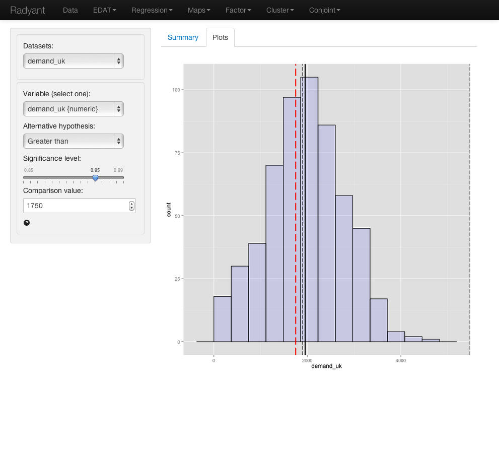

The single mean (or one-sample) t-test is used to compare the mean of a variable in our data to a hypothesized mean in the population from which our sample data are drawn. This is important since we seldom have access to data for an entire population. The hypothesized value in the population is specified in the 'Comparison value' box.
We can perform either a one-tailed test (i.e., less than or greater than) or two-tailed test (see 'Alternative hypothesis'). In marketing we often use one-tailed tests because we want to evaluate if the available data provide evidence that a variable or effect is larger (or smaller) than some base-value (i.e., the value specified in the null-hypothesis).
We have access to data from a random sample of grocery stores in the UK. Management will consider entering this geographical market if consumer demand for the product category exceeds 100M units, or, approximately, 1750 units per store. The average demand per store in the sample is equal to 1953. While this number is larger than 1750 we need to determine if the difference could be attributed to sampling error.
You can find the information on unit sales in each store in the store sample in the demand_uk.rda data set. The data set contains one variable, 'demand_uk'. Our null-hypothesis is that the average demand for a store is equal to 1750 unit. This is the number we enter into the 'Comparison value' box. Because we want to determine if the available data provides sufficient support to reject the null-hypothesis in favor of the alternative that average store demand in the UK is larger than 1750 we choose the 'Greater than' option for the 'Alternative hypothesis' drop-down.
Because the p-value is smaller than the conventional level of significance (i.e. 0.05) we can reject the null hypothesis based on the available sample. The data suggest that management should consider entering the UK market.
In addition to the numerical output provided in the Summary tab we can also evaluate the hypothesis visually (see Plots tab). The settings in the side-panel are the same as before. The plot shows a histogram of the store sales data. The solid black line indicates the sample mean and the dashed red line the comparison value (i.e., unit sales under the null-hypothesis). The dashed black lines represent the confidence interval around the sample mean. Because the dashed red line does not fall within the confidence interval (1897 to Inf.) we reject the null-hypothesis in favor of the alternative.
